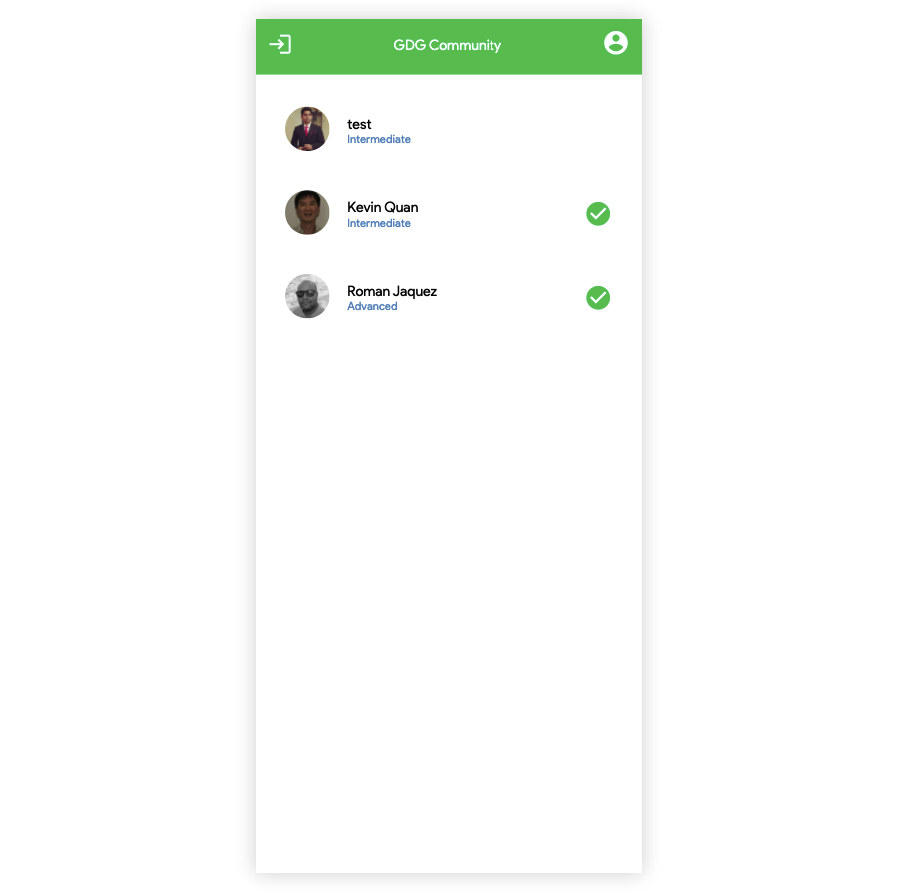
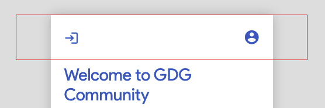
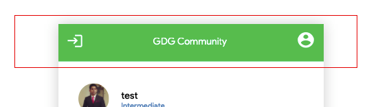

This codelab provides the tutorial on how to create the GDG Community Page, where you and all other registered members can see each other logged in in real-time.
At the end of this lab, you will have the GDG Community page that looks like the following:

You'll be able to see all users who are registered members of the GDG Community app, and even the ones who are logged in in real time (denoted by the green check). The green check is not shown for logged out members.
Open the user.service.ts and add a method called getUsers() to fetch all registered users under the Firebase collection with name community:
...
getUsers() {
return this.firestore.collection('community').ref;
}
...
This returns a ref object from which you can subscribe and extract the data directly from Firebase.
The following method setUserOnlineStatys is the way that we will be setting the current logged in user's status of isOnline to true. We target the Firebase document associated with the logged in user by its userId out of the community collection, then we call .set, passing the value to change in this document, and using the option of { merge: true } since the .set method overrides the content of a document when performing an update; this way merges existing values and just changes the provided ones. Paste the code below into the UserService class:
...
setUserOnlineStatus(userId: string, isUserOnline: boolean) {
return new Promise<boolean>((resolve, reject) => {
this.firestore.collection('community').doc(userId).set({
isOnline: isUserOnline
}, { merge: true }).then(() => {
resolve(true);
});
});
}
...
Notice how we wrap it inside a Promise so we can handle the Firebase update asynchronously and resolve this Promise to be able to return to the user upon success.
Once the service operations are in place, let's proceed with the page itself.
Let's create the page for the GDG Community, starting by using the Angular CLI to generate the component elements for us. At the root of the project, execute the following command:
ng generate component gdg-community-page
As always, this generates the necessary files for this component. Let's start by adding the logic behind the component. Locate the gdg-community-page.component.ts and let's start adding some of the logic for it.
Add the encapsulation: ViewEncapsulation.None to this component's @Component decorator:
...
@Component({
selector: 'app-gdg-community-page',
templateUrl: './gdg-community-page.component.html',
styleUrls: ['./gdg-community-page.component.less'],
encapsulation: ViewEncapsulation.None
})
...
Let's create the property that will hold the list of all GDG Community Members, which will be a collection of MemberData objects:
...
gdgCommunityMembers: MemberData[] = [];
...
Inject in the constructure the UserService service so we can pull the list of users from Firebase. *UserService serves as a wrapper around access to our Firebase collections:
...
constructor(private userService: UserService) { }
...
In the ngOnInit of the GdgCommunityPageComponent, let's tap into the UserService's getUsers() method which returns a reference of the community Firebase collection, from which we can tap into the get() method and the onSnapshot method:
...
ngOnInit(): void {
// fetching the list initially, use get
this.userService.getUsers().get().then((querySnapshot) => {
querySnapshot.forEach((doc) => {
this.gdgCommunityMembers.push(doc.data() as MemberData);
});
});
// listen for updates, use onSnapshot
this.userService.getUsers().onSnapshot((querySnapshot) => {
this.gdgCommunityMembers = [];
querySnapshot.forEach((doc) => {
this.gdgCommunityMembers.push(doc.data() as MemberData);
});
});
}
...
The get() method fetches the data available in the collection. This returns a Promise which returns a querySnapshot of the collection data, from which we can loop through, get each document as a Firebase document, out of which you unwrap the data via the .data() method. Then inside the callback method, we loop through all the elements inside the querySnapshop which is nothing but a copy of what's currently in Firebase's community collection.
The onSnapshot listens for updates on the collection at hand - in our case, the community collection. Any newly added elements, or any updates any of the documents inside of this collection, will trigger the onSnapshot hook method. Then, inside the callback, we just loop through all the values in tne querySnapshot which is nothing more than the updated version of the collection in question.
Locate the gdg-community-page.component and add the following HTML:
<div class="gdg-community-page app-page">
<app-bar [title]="'GDG Community'" [showProfile]="true"></app-bar>
<section class="gdg-community-list">
<ng-container *ngFor="let member of gdgCommunityMembers">
<!-- here we need to iterate over the list of members and display their info -->
</ng-container>
</section>
</div>
This is a simple structure in which we have a container called gdg-community-list in which we are looping through the list of members in the gdgCommunityMembers collection. We now need to consume each member in the iteration and display their info somehow.
If you notice here also, we are using the commonly used app-bar reusable component, which shows the title and profile icon via the inputs provided called title and showProfile respectively.
Now, how do we display the member information? We can do it here in line, but why not create a more encapsulated component that comprises all information related to a member, their logged in status, etc.?
Let's proceed by creating a new reusable Angular component.
Components are cheap, that's why we like to break up our application into discrete, reusable, encapsulated components rather than doing inline markup.
Go to the app/components folder in the Visual Studio command line, and type up the following command to create a component called community-member-row:
ng generate component community-member-row
As always, this generates the necessary files (HTML, TS, LESS). Locate its community-member-row.component.ts in order to add the required logic. Start by adding the encapsulation: ViewEncapsulation.None to let the CSS styles cascade into this component if needed.
@Component({
selector: 'app-community-member-row',
templateUrl: './community-member-row.component.html',
styleUrls: ['./community-member-row.component.less'],
encapsulation: ViewEncapsulation.None
})
export class CommunityMemberRowComponent implements OnInit {
The only thing we will add here is an @Input() parameter that we'll call member, of type MemberData. This will serve as the entry point through which we will inject the member data into this component. Add this inside of the *CommunityMemberRowComponent on top of the constructor:
@Input() member: MemberData;
We're good as far as logic. Now let's navigate to the community-member-row.component.html and paste the following markup:
<div class="gdg-member-row">
<div class="member-img">
<img src="{{ member.photoURL }}" />
</div>
<div class="member-info">
<div class="member-name">{{ member.name }}</div>
<div class="member-level">{{ member.skills | titlecase }}</div>
</div>
<div class="member-online" *ngIf="member.isOnline">
<div class="member-online-check">
<span class="member-online-icon material-icons">check_circle</span>
</div>
</div>
</div>
As you can see, the parent container gdg-member-row just wraps three top-level components: member-img, member-info and member-online which represent the entities we want to display. member-image displays the image of the user through the photoURL property in an img tag; the member-info displays the name and skills, and it displays the skills using an Angular Pipe - utilities that act upon data and alter it before being rendered; in this case, it displays the skills using titlecase (capitalizes the first letter in the word). More on pipes here.
The member-online shows a green checkmark only if the member.isOnline property is provided, which conditionaly renders this segment (hence the ngIf). We are also making use of the Google Material Icons to display a checkmark icon:
...
<span class="member-online-icon material-icons">check_circle</span>
...
Now, find the community-member-row.component.less and paste the CSS below:
@import './../../../assets/styles/colors.less';
.gdg-member-row {
display: flex;
align-items: center;
padding: 20px;
.member-img {
width: 50px;
img {
max-width: 100%;
border-radius: 50%;
}
}
.member-info {
margin-left: 20px;
flex: 1;
.member-level {
font-size: 0.8em;
color: @color_focus_bckg;
}
}
.member-online-check {
display: flex;
align-items: center;
justify-content: flex-end;
.member-online-icon {
color: @color_profile;
font-size: 2em;
}
}
}
Notice the member-info how it also adopts the flexbox model strategy and uses flex: 1 to occupy the vast majority of the space, pushing its siblings to the sides, while also applying a margin-left of 20 pixels.
This component is created - now, let's use it!
Let's go back to the gdg-community-page.component.html and add the missing piece. Replace the placeholder content inside the ng-container *ngFor by adding the newly created community-member-row component. The ng-container should look like this now:
...
<ng-container *ngFor="let member of gdgCommunityMembers">
<app-community-member-row [member]="member"></app-community-member-row>
</ng-container>
...
Notice how we are injecting each of the iterating member elements into the app-community-member-row component via its provided input [member]. This way you are hiding the implementation details of the community member row, making it more encapsulated.
Now, add the CSS for the gdg-community-page.component.less:
@import './../../assets/styles/colors.less';
.gdg-community-page {
display: flex;
flex-direction: column;
height: 100vh;
.app-bar {
padding: 16px !important;
background: @color_profile;
display: flex;
justify-content: space-between;
span {
color: #FFF !important;
}
}
}
.gdg-community-list {
flex: 1;
padding: 16px;
overflow-y: auto;
}
One thing to notice here. The regular app-bar component looks like this:

And now notice how different it looks in this page - and it has exactly the same functionality!

This is the power of CSS and its cascading nature. Notice in the styles above, we are clearly stating that only if the app-bar is displayed within the gdg-community-page, it adopts the green background from the @color_profile, change the icon span tags to white (#FFF), and reduces the padding a bit. We are in this case overriding the original CSS styles from the app-bar and only applying it in the case where it appears inside the gdg-community-page.
.gdg-community-page {
display: flex;
flex-direction: column;
height: 100vh;
.app-bar {
padding: 16px !important;
background: @color_profile;
display: flex;
justify-content: space-between;
span {
color: #FFF !important;
}
}
}
This page should be all set! Take the whole workflow for a spin, starting from clearing the localstorage value of the userId so it thinks you haven't registered yet:
Congratulations, if you made it this far, you've completed a full-fledged, full-stack application using Angular as the front-end, and Firebase as the backend, and implemented the latest patterns and practices when developing single-page apps in the process.
We the GDG Lawrence Team hope you've enjoyed this journey with us!